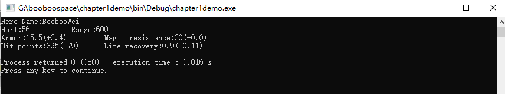
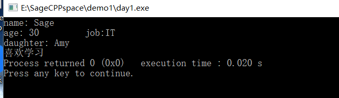

C++ 基本语法
C++ 程序可以定义为对象的集合，这些对象通过调用彼此的方法进行交互。现在让我们简要地看一下什么是类、对象，方法、即时变量。
对象- 对象具有状态和行为。例如：一只狗的状态 - 颜色、名称、品种，行为 - 摇动、叫唤、吃。对象是类的实例。类- 类可以定义为描述对象行为/状态的模板/蓝图。方法- 从基本上说，一个方法表示一种行为。一个类可以包含多个方法。可以在方法中写入逻辑、操作数据以及执行所有的动作。即时变量- 每个对象都有其独特的即时变量。对象的状态是由这些即时变量的值创建的。
程序结构
让我们看一段简单的代码，可以输出单词 Hello World。
|
接下来我们讲解一下上面这段程序：
- C++ 语言定义了一些头文件，这些头文件包含了程序中必需的或有用的信息。上面这段程序中，包含了头文件
<iostream>。 - 下一行
using namespace std;告诉编译器使用std命名空间。命名空间是 C++ 中一个相对新的概念。 - 下一行
// main()是程序开始执行的地方 是一个单行注释。单行注释以//开头，在行末结束。 - 下一行
int main()是主函数，程序从这里开始执行。 - 下一行
cout << "Hello World";会在屏幕上显示消息 “Hello World”。 - 下一行
return 0;终止 main( )函数，并向调用进程返回值 0。
编译 & 执行
接下来让我们看看如何把源代码保存在一个文件中，以及如何编译并运行它。下面是简单的步骤：
- 打开一个文本编辑器，添加上述代码。
- 保存文件为 hello.cpp。
- 打开命令提示符，进入到保存文件所在的目录。
- 键入 ‘g++ hello.cpp ‘，输入回车，编译代码。如果代码中没有错误，命令提示符会跳到下一行，并生成 a.out 可执行文件。
- 现在，键入 ‘ a.out’ 来运行程序。
- 您可以看到屏幕上显示 ‘ Hello World ‘。
$ g++ hello.cpp |
请确保您的路径中已包含 g++ 编译器，并确保在包含源文件 hello.cpp 的目录中运行它。
您也可以使用 makefile 来编译 C/C++ 程序。
分号 & 语句块
在 C++ 中，分号是语句结束符。也就是说，每个语句必须以分号结束。它表明一个逻辑实体的结束。
例如，下面是三个不同的语句：
x = y; |
语句块是一组使用大括号括起来的按逻辑连接的语句。例如：
{ |
C++ 不以行末作为结束符的标识，因此，您可以在一行上放置多个语句，等同于
x = y; y = y+1; add(x, y);
标识符
C++ 标识符是用来标识变量、函数、类、模块，或任何其他用户自定义项目的名称。一个标识符以字母 A-Z 或 a-z 或下划线 _ 开始，后跟零个或多个字母、下划线和数字（0-9）。
C++ 标识符内不允许出现标点字符，比如 @、& 和 %。C++ 是区分大小写的编程语言。因此，在 C++ 中，Manpower 和 manpower 是两个不同的标识符。
下面列出几个有效的标识符：
mohd zara abc move_name a_123 |
关键字
下表列出了 C++ 中的保留字。这些保留字不能作为常量名、变量名或其他标识符名称。
| asm | else | new | this |
|---|---|---|---|
| auto | enum | operator | throw |
| bool | explicit | private | true |
| break | export | protected | try |
| case | extern | public | typedef |
| catch | false | register | typeid |
| char | float | reinterpret_cast | typename |
| class | for | return | union |
| const | friend | short | unsigned |
| const_cast | goto | signed | using |
| continue | if | sizeof | virtual |
| default | inline | static | void |
| delete | int | static_cast | volatile |
| do | long | struct | wchar_t |
| double | mutable | switch | while |
| dynamic_cast | namespace | template |
完整关键字介绍可查阅：C++ 的关键字（保留字）完整介绍
三字符组
三字符组就是用于表示另一个字符的三个字符序列，又称为三字符序列。三字符序列总是以两个问号开头。
三字符序列不太常见，但 C++ 标准允许把某些字符指定为三字符序列。以前为了表示键盘上没有的字符，这是必不可少的一种方法。
三字符序列可以出现在任何地方，包括字符串、字符序列、注释和预处理指令。
下面列出了最常用的三字符序列：
| 三字符组 | 替换 | |
|---|---|---|
| ??= | # | |
| ??/ | \ | |
| ??’ | ^ | |
| ??( | [ | |
| ??) | ] | |
| ??! | \ | |
| ??< | { | |
| ??> | } | |
| ??- | 如果希望在源程序中有两个连续的问号，且不希望被预处理器替换， 这种情况出现在字符常量、字符串字面值或者是程序注释中， 可选办法是用字符串的自动连接：”…?””?…”或者转义序列：”…?\?…”。 |
从Microsoft Visual C++ 2010版开始，该编译器默认不再自动替换三字符组。如果需要使用三字符组替换（如为了兼容古老的软件代码），需要设置编译器命令行选项/Zc:trigraphs
g++仍默认支持三字符组，但会给出编译警告。
空格
只包含空格的行，被称为空白行，可能带有注释，C++ 编译器会完全忽略它。
在 C++ 中，空格用于描述空白符、制表符、换行符和注释。空格分隔语句的各个部分，让编译器能识别语句中的某个元素（比如 int）在哪里结束，下一个元素在哪里开始。因此，在下面的语句中：
int age; |
在这里，int 和 age 之间必须至少有一个空格字符（通常是一个空白符），这样编译器才能够区分它们。另一方面，在下面的语句中：
fruit = apples + oranges; // 获取水果的总数 |
fruit 和 =，或者 = 和 apples 之间的空格字符不是必需的，但是为了增强可读性，您可以根据需要适当增加一些空格。
C++ 注释
程序的注释是解释性语句，您可以在 C++ 代码中包含注释，这将提高源代码的可读性。所有的编程语言都允许某种形式的注释。
C++ 支持单行注释和多行注释。注释中的所有字符会被 C++ 编译器忽略。
C++ 注释以 /* 开始，以 */ 终止。例如：
/* 这是注释 */ |
注释也能以 // 开始，直到行末为止。例如：
|
在 /* 和 */ 注释内部，// 字符没有特殊的含义。在 // 注释内，/* 和 */ 字符也没有特殊的含义。因此，您可以在一种注释内嵌套另一种注释。例如：
/* 用于输出 Hello World 的注释 |
课堂作业
|
运行结果

